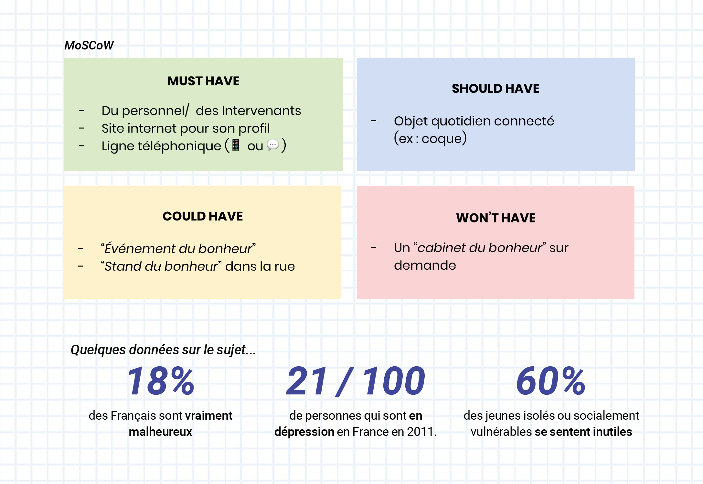
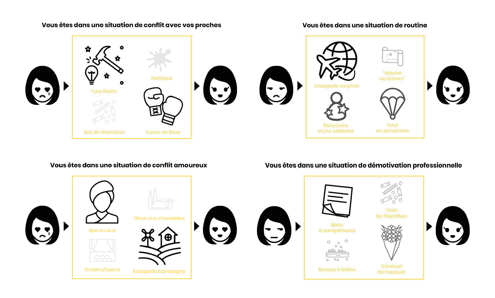
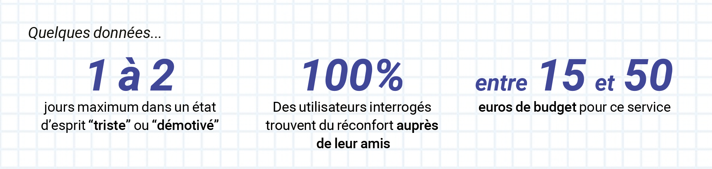

Design Sprint :
SHOOT OF HAPPINESS
Activité : Design Sprint • UX design • Recherche • Card sorting • User Interview • Prototypage
Contexte : Recommandation fictive d’UX produite lors d’un design sprint (de 4 jours) dans le cadre d’un projet scolaire par équipe de 3.
Problématique : Nous avons étudié et choisi le sujet afin de trouver une solution digitale ou non, à l’accès du bonheur à travers la motivation et l’estime de soi chez les 18-24 ans.
Jour 1 #Empathie & #Define
Pour le premier jour après des interviews qualitatives et quantitatives, nous nous sommes intéressés à la souffrance de nos personnas à l’aide d’une empathie map et d’une time line.Puis nous avons défini les fonctionnalités vitales de notre dispositif à l’aide d’un MOSCOW, et de post-it.
Jour 2 #Ideate
Nous avons analysé toutes les données, brainstormer, ouvert le champ des possibles concernant les solutions envisageables, pour enfin en prototyper une pour la tester et itérer dessus : un service de “livraison” de différentes sortes de bonheur. On a pris et utilisé les contraintes comme des opportunités pour créer une nouvelle solution.
Jour 3 #Prototype
Notre solution n’étant pas une solution digitale. Nous avons utilisé des mises en situation comme prototype. L’objectif était d’avoir les retours de personnes ainsi qu’un questionnaire qualitatif. Nous avons pensé à quatre situations types, et pour chacune des situations on y propose quatre activités possibles. Les thèmes choisis : Conflit amoureux, Conflit avec les proches, Démotivation pro, Routine.
Pour compléter cette phase de choix, nous avons évalué les choix possibles pour nos personnas, que serait leur timeline s’ils avaient utilisé notre solution.
Jour 4 #Test and Learn
Voici ce qui en ressort, sur 6 jeunes de 18-24 ans interrogés, pendant 20 min en moyenne par personne et 2 à 3 situations choisies par chacun.
 Conclusion
Ce que l’on en retire :
• Notre solution n’est pas adaptée au situation de conflit, notre cible a déjà accès à des psy pour ces problématiques, car il s’agit d’un sujet trop personnel.
• Il y a un gros aspect de personnalisation (surtout pour la partie couple), aucune généralité ne peut être prise en compte.
• Il y a une grosse question sur la répartition dans le temps du service, activité sur 1, 2, 5 jours etc
• Problème de consentement du bénéficiaire, pour l’offrir.
• La solution nourriture ne sert pas souvent car trop classique et déjà accessible.
Ce que ça va mettre en avant :
• Les situations de routines et de démotivations
• Des expériences plutôt que le mobilier ou accessoire
What's the next ?
Nous avons pensé à de nombreuses itérations envisageables :
• Penser à des partenariats et une offre spéciale pour les entreprises (ex : Salle à thème / bureau extérieur des autres avec de la musique ou ambiance sonore)
• Rajouter des solutions plus long terme et les tester et mixer comme par exemple un abonnement en salle de sport ou à une activité (Zumba, boxe, coach sportif…)
• Tester des activités centrées sur des états-d’esprits plus précis (Routine sociale, routine alimentaire, routine sportive, routine loisir)
• Approcher les activités originales et hors du commun pour les rendre accessibles.
• Des activités personnalisées par les proches (messages vocaux /compliment par les proches)
• Offres pour occasion, (ex : fin de vie suite à maladie mortelle, anniversaire, enterrement de vie de jeune vie/garcon, enterrement etc)
• Aborder les activités de façon collective ?
• Paiement abonnement et / ou ponctuel
Ce que j'en retiens
Lors de ce projet scolaire, j’ai appris à ouvrir le champ des possibles vers des solutions qui ne sont pas viables économiquement mais qui ramènent de la créativité dans les propositions. Je pense qu’une itération supplémentaire pour recentrer les possibles économiquement viables pour un MVP aurait été l’étape suivante dans le cadre de ce projet. Il peut parraître futile et pas finalisé mais c’est la méthode et les outils qu’il y a derrière qui ont de l’importance pour moi.